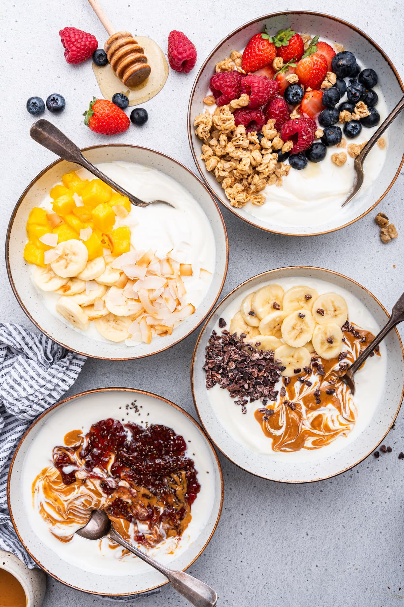

Título: Operación Desayuno Matemáticas para compartir.
Edad a la que va dirigida: 1º ESO
Materia: Matemáticas.
Justificación:
A partir de la rutina de pensamiento vemos como estta situación de aprendizaje responde a la necesidad de conectar las matemáticas con contextos reales, cercanos y significativos para el alumnado, favoreciendo un aprendizaje funcional y aplicable a la vida cotidiana.
A partir de la rutina de pensamiento previa, se detectó la importancia de diseñar propuestas que aumenten la motivación del alumnado y le permitan comprender la utilidad de los contenidos matemáticos. En este sentido, la organización de un desayuno saludable constituye un reto auténtico que implica la resolución de problemas reales, como la gestión de un presupuesto, el cálculo de cantidades o la atención a necesidades específicas (alergias e intolerancias).
El proyecto promueve un enfoque metodológico activo y competencial, donde el alumnado asume un papel protagonista en su propio aprendizaje. Se favorece el desarrollo de la competencia matemática mediante el uso de la proporcionalidad, los números decimales y la estadística, así como la competencia digital a través del uso de herramientas como formularios, hojas de cálculo o plataformas colaborativas.
Asimismo, se fomenta el trabajo cooperativo, la toma de decisiones, el pensamiento crítico y la responsabilidad, integrando también elementos de educación en valores relacionados con la salud y el consumo responsable.
El producto final refuerza el aprendizaje significativo, ya que permite al alumnado aplicar los conocimientos adquiridos en una situación real, evidenciando que las matemáticas no son un contenido aislado, sino una herramienta útil para comprender y actuar en el mundo que les rodea.
En este enlace se podrá acceder a la INFOGRAFÍA de nuestro proyecto.
Documento elaborado por: Almudena Medina García.
Licencia: Creative Commons CC BY-NC-SA 4.0
ANTES DE EMPEZAR...
Aquí os dejo un vídeo de la importancia de realizar un desayuno saludable.